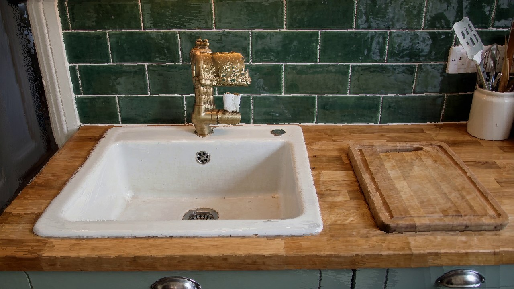
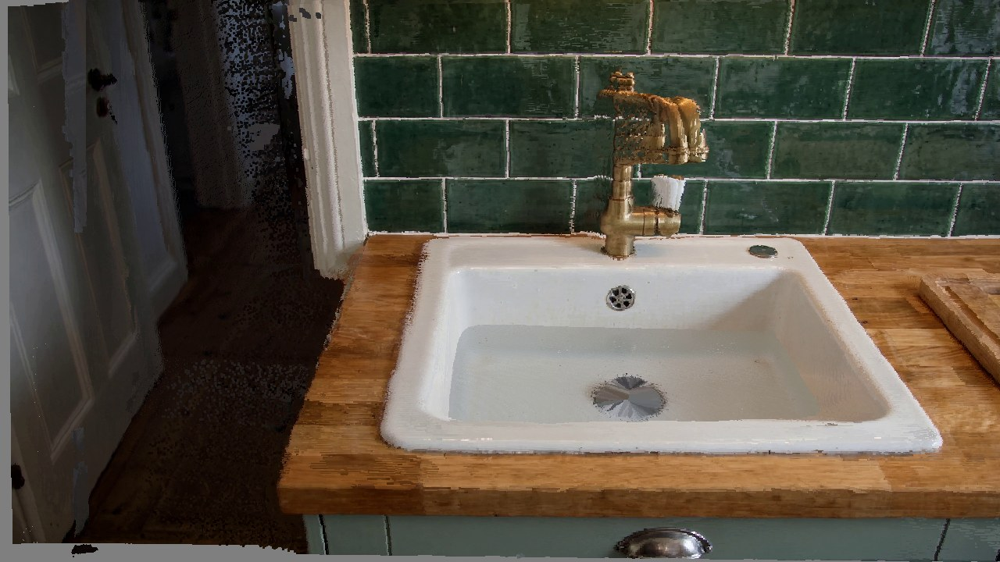
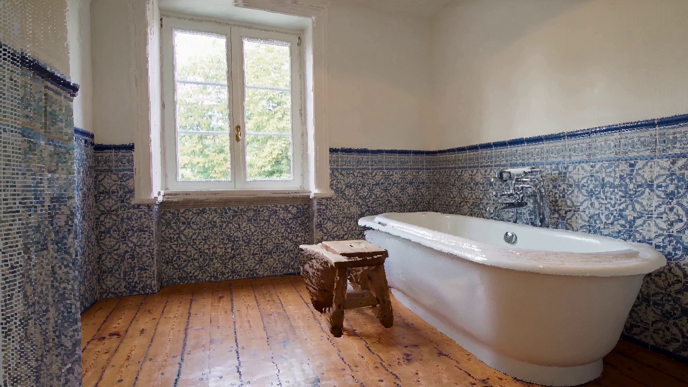
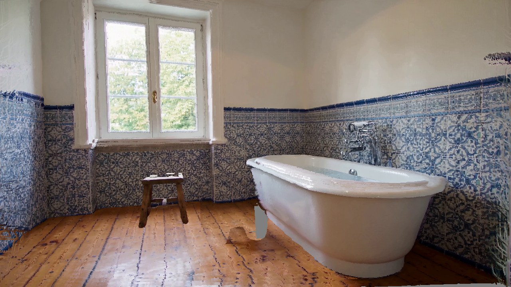
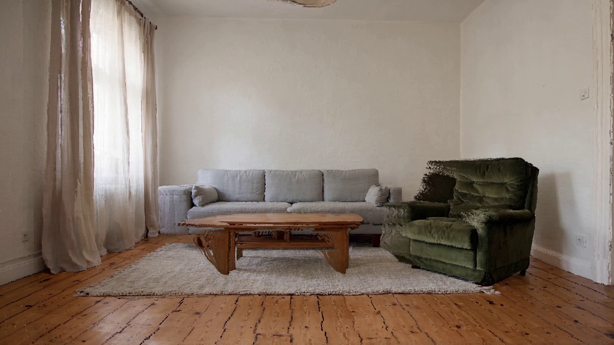
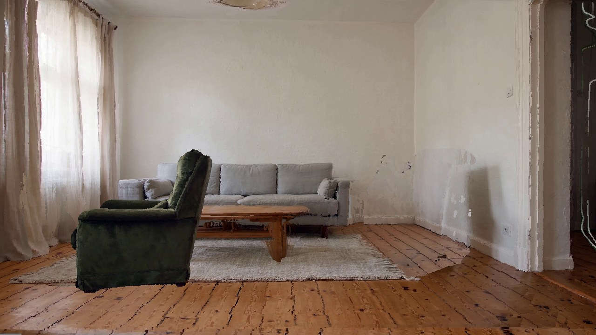
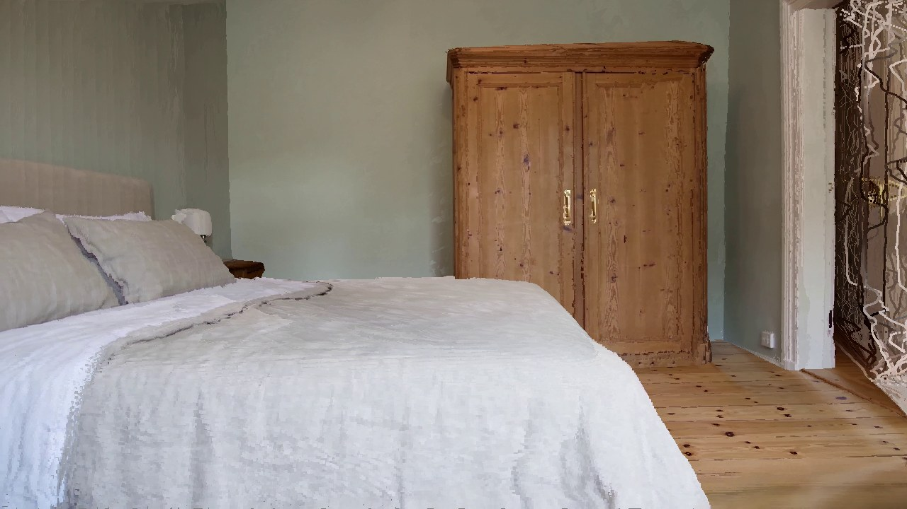
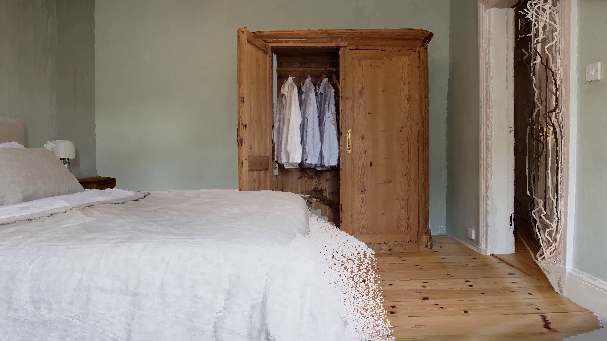
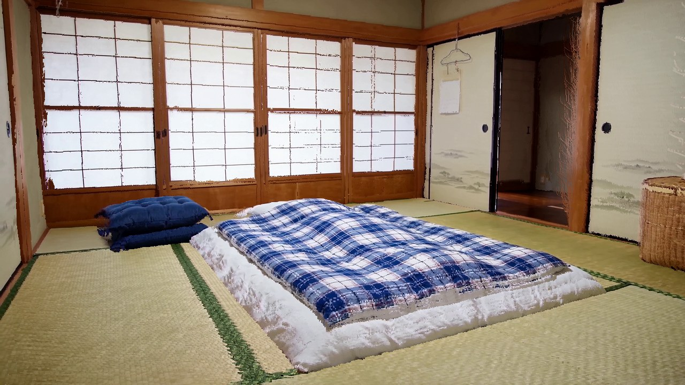
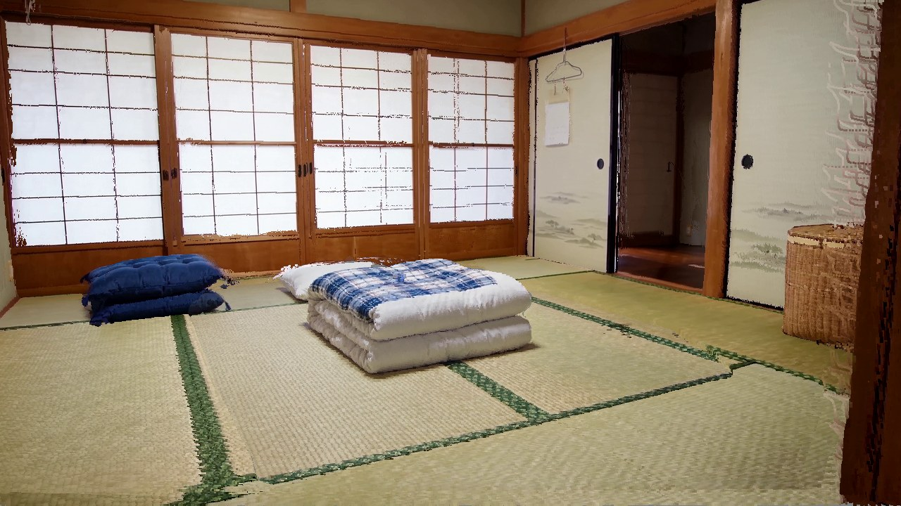

Submission 1186 · Rebuttal
Point-cloud memory update
Consecutive generated clips per scene (top) and the scene point cloud after each clip, rendered from that clip's camera (bottom).
Sink
Generated clip
Point cloud after the clip
1 Empty sink 2 Filled with water




Bathroom
Generated clip
Point cloud after the clip
1 Stool beside the tub 2 Stool moved under the window; tub filled




Armchair
Generated clip
Point cloud after the clip
1 Armchair beside the sofa 2 Armchair moved to the window




Wardrobe door
Generated clip
Point cloud after the clip
1 Doors closed 2 Left door opened




Futon
Generated clip
Point cloud after the clip
1 Futon spread out 2 Futon folded



